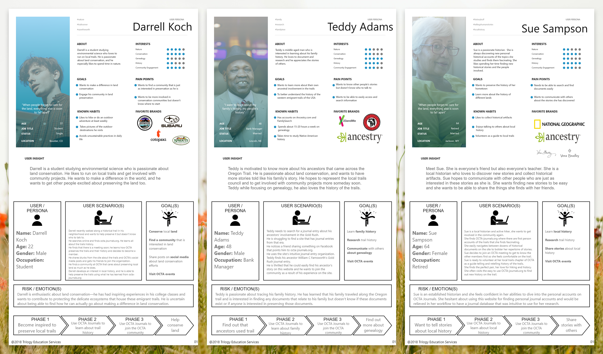

Nyaa-kuza!!
- Main role: Producer
- Secondary roles: Tech Lead, UX Designer, UI Engineer
- Timeframe: 6 months
- Platform: PC, Mac, Linux
- Team size: 17
- Tools and software:
Nyaa-kuza!! is a narrative based fighting game where you play as an ex-yakuza cat,
traveling through the outskirts of Japan in order to save your catnapped wife!
Nyaa was my senior project, it went through many iterations and rebrands before
we published on Steam. My own role changed multiple times throughout the development
cycle as it became apparent that the team was in need of strong leadership. I made the
decision to put my team first and focus on being a producer (a role I had been in on
previous games) rather than focusing soley on UX design and I think it paid off
tremendously. I didn't get to spend as much time iterating on and testing the UX as
I would in a perfect world, but my team was grateful to have me at the helm
and we consistently impressed our professors and classmates with our progress between sprints.
When development began I was largely self-taught in UI/UX design and during the last 3 months
of development I began attending a UX/UI boot camp.
- Guided team to meet goals and sprint deadlines while ensuring the spirit of the game was maintained.
- Improved team dynamics and fostered an environment of respect.
- Delegated tasks to engineers and assisted in troubleshooting and resolving bugs.
- Designed user experience in-engine and iterated on designs with feedback from players.
- Collaborated with artists and engineers to create and implement UI elements.
- Programmed and tested UI and UX elements.
Main Responsibilities:
Research Phase
User interviews and survey
Our user interviews revealed that prospective users wanted more ways to interact with the content on the site and more intuitive navigation. The survey verified that users were not inspired by the current site or properly understood OCTA Journal's mission.

User personas
We created three user personas for the site based on the different types of users reported by OCTA, however we were not able to gather the site data about these users from OCTA in time for the project.
User insight and problem statements
We created user insight and problem statements for each persona to help us understand the unique motivations and needs for each type of user, we then sythesized these into a single UX statement that would best fulfill all these needs.

Definition Phase
Value proposition
We defined a value proposition that explored how our redesign would address the wants, needs, and pain points of OCTA Journal's users.

Storyboard
We then created storyboards and UX scenarios for each persona and here we noticed a trend: each user had different motivations that could be solved through the use of the site and joining the OCTA community, this helped us realize that community engagement would be a huge benefit to OCTA Journal's users.
Ideation Phase
Site map
We employed card sorting to rearrange the navigation, here we ran into the issue of too many layers until we realized it would be far better to save the complexity for the landing pages and keep the navigation simpler. We then created a site map around the reorganized navigation. We decided on including two navigation bars: one for the social media and calls to action, and one for actually navigating the site, this would allow the navigation to maintain a good amount of white space while also containing all the pertinent information. We also designed our footer to have clearly defined sections of internal and external links, as well as to plug the social media and donation buttons again as that was a high priority to our client.

User flow
Then, we designed a user flow to explain how a typical user would access an article on the site. At this stage we decided to add functionality to the site that did not yet exist: user accounts. Previously users would have to put in a password they received over email for each article in order to access it, attaching access to an account follows modern standards and removes a barrier to access.

Prototyping Phase
Paper prototype
We completed a competitor analysis and took those ideas into our paper prototypes.

Digital protoype
In our first digital protoype we found that users needed more clarification that they were paying for a service, as well as a desire to know what they are buying before they pay for it, perhaps the largest piece of feedback was that users wanted to view the journals as embedded PDFs.

Testing Phase
Iteration 2
At this stage we looked at a few academic journal websites to get an understanding of how they were handing the reciprocity principle and found that we needed to add a page to our designs for the embedded PDF and then redesign the original page to show a snippet of the article. In order to show that the content was locked behind a paywall, we added a lock icon to these snippets and added a container above the fold explaining the benefits and cost of a membership. We also moved the comment section to the embedded PDF page as it made much better sense to have it related to a specific document. We then brought the stakeholders in to take a look at our work so far, and overall they liked what we were doing, however they requested a few changes to hierarchy and a removal of the advertisement for paper-trails.org at the top of the journal page.

Iteration 3
Our final iteration updated the color scheme because we found it too grating, and it reminded users of UPS. We also rearranged the navigation bar to direct users to stay on the site for longer, moving the social media links to the side and keeping calls to action in the center.

Results

Task Name
I would have loved to have more time to work on this project, however, given the time I had I am happy with the work that we were able to complete. I would have liked to have done more testing with elderly and tech-challenged users.
Future opportunities: Design mobile & tablet views, Design other detail pages, Decide on site copy, Feature stories on the homepage, explore filtering and sorting possibilities
Major takeaways from this project: Users dislike being redirected to different websites and prefer to stay on the same site as much as possible, Users want more information about the product they are buying before they purchase, Users want to be able to navigate through the articles chronologically, Users are confused when it is not obvious that they must pay for a service, Users are confused when it is not obvious items exist below the fold